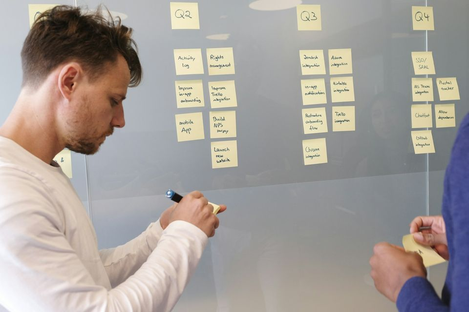

Build with AI.
Practical use cases, frameworks, workflows and templates for putting what you've learned to work, plus Faith AI for business systems.
On this page
Use cases
One real task. A better way to work.
Illustrative learning projects, not claims of customer results. See how AI can support a task while you stay in control.
Training project · illustrative
Turn a topic into a content plan.
Start with: Your audience, one business objective and approved source notes.
- Choose one useful audience question
- Draft three angles from your source notes
- Review and turn one angle into a publishable draft
You stay in control
Check accuracy, voice and whether every claim is supported.
Training project · illustrative
Make lead follow-up more consistent.
Start with: An approved inquiry record, service details and the next action.
- Summarize the inquiry and missing details
- Draft a relevant next-step message
- Review the draft and record the follow-up date
You stay in control
Verify contact permission, pricing and context before sending.
Training project · illustrative
Help your team find an answer.
Start with: Approved process notes and frequently asked questions.
- Organize the approved source material
- Draft an answer with its source reference
- Flag gaps for the responsible team member
You stay in control
Check source permissions and keep human escalation available.

Featured framework
AI Opportunity Map
Identify repetitive work, high-friction processes, and practical areas where AI can create leverage.
- List the work you repeatEverything you do weekly: reports, emails, research, follow-ups.
- Mark the frictionWhere does work wait, get copied by hand, or go back and forth?
- Pick one place to startChoose the task where AI saves the most time with the least risk, and test it.
Workflow
From manual research to an AI-assisted research workflow.
- ResearchGather sources with AI search and summaries, and keep links to the originals.
- OrganizeGroup findings by theme so nothing important gets lost.
- AnalyzeAsk AI to compare, spot patterns and list open questions.
- DraftTurn the analysis into a first draft in your own structure.
- ReviewCheck facts and sources yourself. This step stays human.

Where it helps
Market scans, competitor notes, proposal research, briefing documents: any task where you read a lot to write a little.
Where to be careful
AI can state things confidently that aren't true. Keep sources attached at every step, and never skip the review.
Templates & tools
Copy it, adapt it, use it.
-
Guide
Prompt Starter Kit & Tools Guide
Prompts to adapt for writing, research and planning, plus a plain-language guide to choosing tools.
Get it -
Worksheet
AI Opportunity Map
The three-step worksheet for finding where AI can help in your own work.
Get it -
Checklist
AI-Assisted Research Workflow
The five steps on one page, with the review questions to ask every time.
Get it -
Plan · Program
30-Day AI Workforce Action Plan
Built with you during the AI-Ready Professional track of the AI Workforce Accelerator.
See the track
AI tools
AI in real hands.
Tools used in practical workflows
-
Choosing tools
Start with the AI already inside the tools you use every day, like email, documents and spreadsheets. Add specialist tools only when a real task needs them.
Get the Tools Guide
AI Workforce Accelerator
Faith AI
Faith AI supports business systems.
Start with the business process you want to improve. We will show you how a workflow could support it, and be clear about what is a learning prototype and what is a supported system.
Training projects
What you build while learning: prototypes to explore and test, not production systems.
Demonstrations
A walkthrough of how a workflow could support your use case.
Supported systems
Scope, features, support and terms are confirmed with you before anything is set up.
Stay updated
Hear about it first.
Notify me about upcoming workshops, events, and new resources.